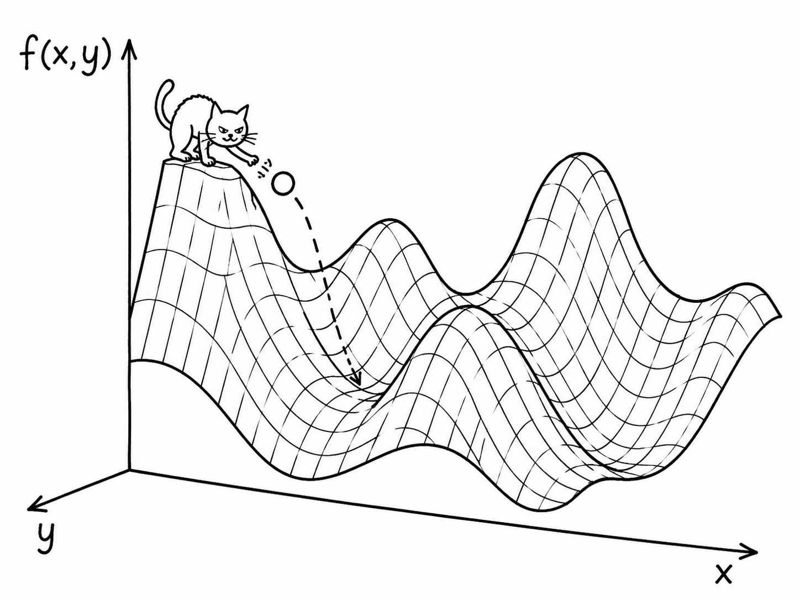
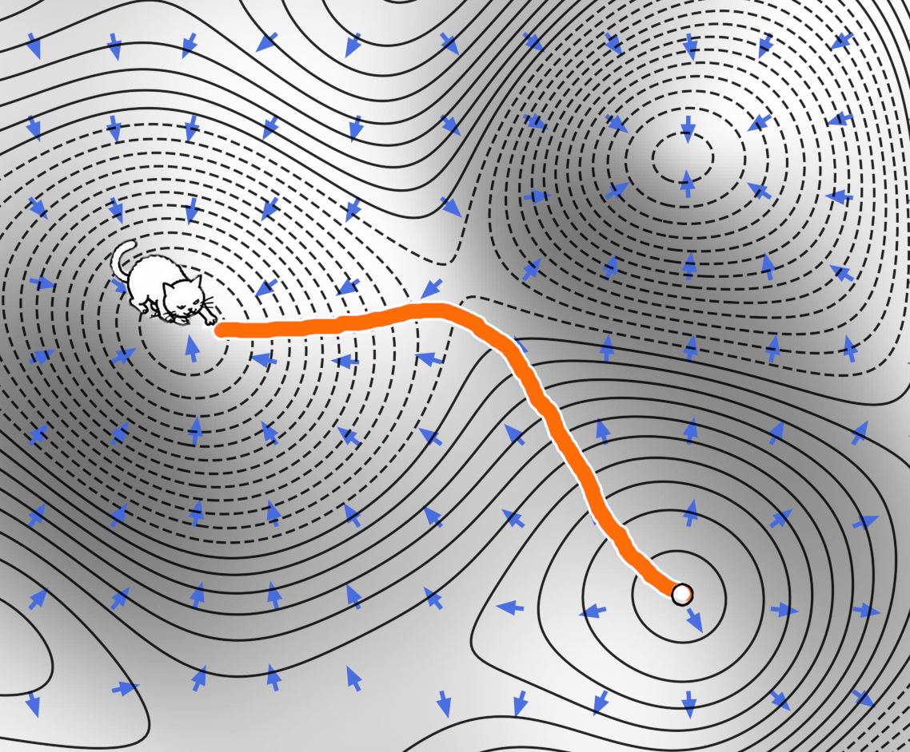
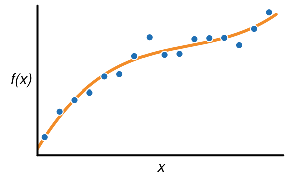
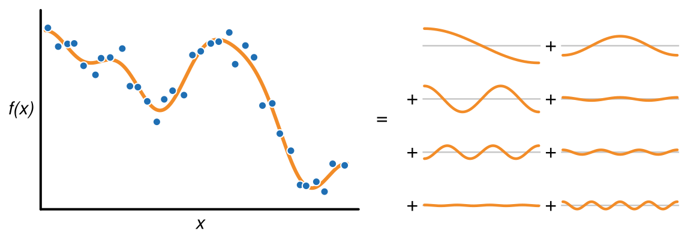
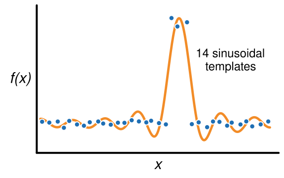
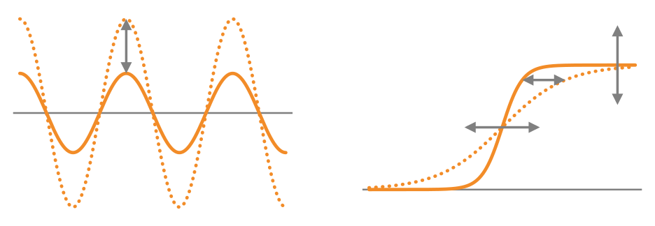
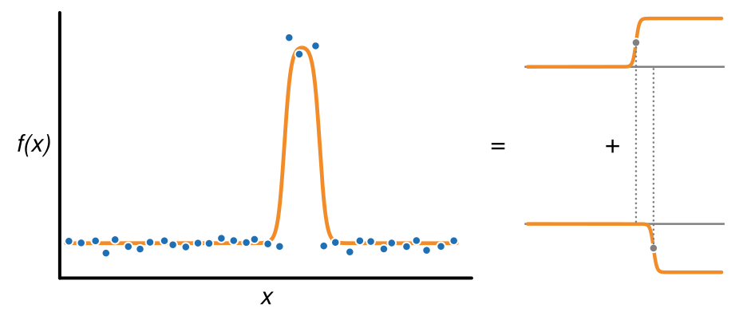
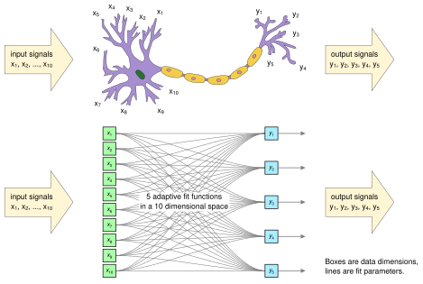

From Optimization to Generative AI in Five Demos
Jim Pivarski
University of Chicago, Data Science Institute
Cultural metaphors:
| 1950's: | Oracle, a giant brain you approach with questions |
| 1960's: | Bureaucracy, a filing cabinet for big companies and government |
| 1970's: | Hobby, homebrew, hacking, “computer lib,” video games |
| 1980's: | Personal desktop, spreadsheets, tools, “bicycle of the mind” |
| 1990's: | Place, cyberspace, superhighway, “my ’lil corner of the Internet” |
| 2000's: | Open mic, decentralized communication, the bazaar, the commons |
| 2010's: | Platform, the cloud, social mirror, the Feed/the Algorithm |
| 2020's: | Chatbot, genie, copilot, stochastic parrot… |
Animate: Someone you talk to.
Inanimate: Something you use.
After 70 years, something happened to make this hope/fear possible.
The purpose of this talk is to try to say what, exactly, happened.
I want to present a technically accurate picture, using interactive demos instead of mathematical derivations.
Specifically avoiding anthropomorphism and brain metaphors:
Craftsmanship: Writing instructions to tell a computer what to do
Farming: Defining constraints and letting an optimization fit them
Farmers don't manually arrange the individual cells of the plants in their fields.
They manipulate the conditions for growth so the plants can make themselves.
We defined 15 free parameters (points on the slide) and a goal: minimize the rolling time.
An optimizer wiggled all 15 parameters, keeping combinations that approach the goal and discarding combinations that take it farther away.
Similar to “survival of the fittest,” but faster: the optimizer samples the rate of change and aims “downhill,” like this minimization of f(x, y) over 2 parameters, x and y:


This slide optimization problem is an old one that can be solved with calculus of variations.
The optimal shape can be computed on paper by solving a differential equation.
…For this problem. Small modifications, like a ball on a slide with air resistance, results in equations without exact solutions.
This is what computers made possible:
A major application of optimization: fitting a theoretical curve to experimental data.

Instead of minimizing time on a slide, we minimize distance between the curve and the data.
The data are: finite in number and finite in range.
The curve is:
Generative AI is fitted to human text and images, is a compressed version of them, and generates new products that are statistically like them.
If the data can have any shape, we have to build arbitrary shapes by adding templates:

The optimization process determines how much of each template to contribute.
With enough sinusoidal waves, you can approximate any continuous shape.
It's common for real datasets to have localized detail and broad regions without much detail. Templates with a fixed shape struggle to fit data like that.

The problem is more extreme for high-dimensional data. Spaces with hundreds or thousands of dimensions are mostly empty.
Instead of a fixed set of templates that can only be scaled vertically, let's use S-shaped curves that can be placed and scaled horizontally as well as scaled vertically.

Now we can fit localized detail better.


| Neural network | Real neurons |
| data are floating-point numbers | data are pulses, timing carries information |
| output is a sum of adaptive fit templates | response is more complex than that |
| organized in layers | no layer structure |
| optimized by a global fit, steered toward steepest descent | optimized by local rules, chemical signals, and evolution |
| only connections matter | chemical signals bypass connections |
Neural networks are inspired by real neurons the way airplanes are inspired by birds.